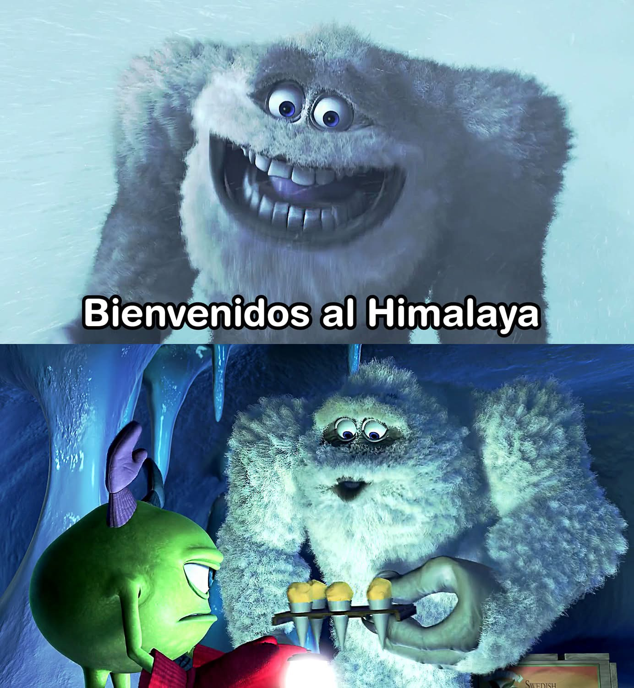

¡Hola! ¿Qué oportunidad buscas? Prueba «becas», «licitaciones SICOES» o «¿hay bloqueos?».
ASISTENTE PÚBLICO · BOLIVIA
Pregunta a La Pala
Busca empleos, becas, convocatorias, compras y normativa del catálogo publicado.
RADAR PÚBLICO · BOLIVIA
Oportunidades públicas, en un solo lugar.
Consulta empleos, becas, convocatorias, compras y fondos. Cada resultado enlaza a su fuente original.

CATÁLOGO VERIFICADO
Oportunidades vigentes
No hay coincidencias. Amplía la búsqueda o consulta una fuente oficial.
FUENTES
Fuentes públicas configuradas
El catálogo se publica como archivo estático. La app no rastrea portales en vivo desde el navegador.
Ver fuentes
MAPACHE
Bloqueos y riesgos reportados
La vista completa de MAPACHE puede consultarse aquí. Sus datos dependen de la última generación publicada.